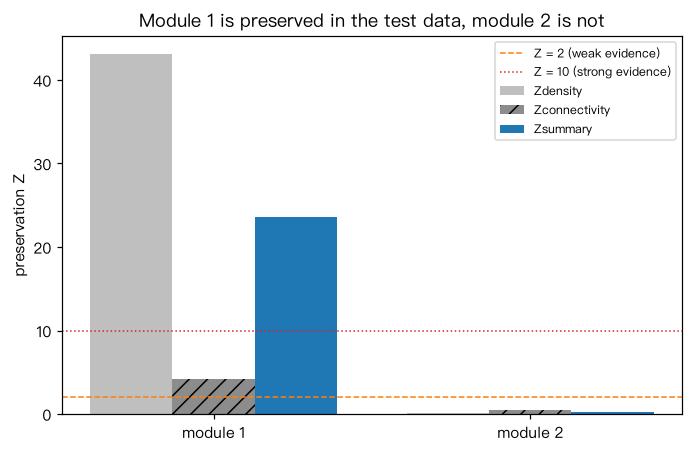

Example08 / 09
模块保守性检验（简化版 modulePreservation 的 Z 统计量）
在参考数据中定义两个模块；检验数据中模块 1 保留了共表达结构，模块 2 的基因彼此独立（未保留）。 对每个模块计算密度类统计量（模块内平均相关 meanCor、第一主成分解释方差 propVE）与 连接模式类统计量（模块内连接度的跨数据相关 cor.kIM、相关矩阵上三角的跨数据相关 cor.cor）， 再在检验数据（300 个基因）中随机抽取同样大小的基因集合 200 次得到零分布，换算为 Z 分数： Zdensity、Zconnectivity 分别取中位数，Zsummary = 二者的平均（与 WGCNA 实现的汇总方式一致）。 输出解读：模块 1 的 Zsummary 高（按 Langfelder 等 2011 的经验阈值属于“强证据”），模块 2 在 0 附近。完整实现还包括更多统计量，并以模块标签置换生成零分布。
Output输出图

Output文字输出
模块 1（25 基因）：meanCor = 0.48，cor.kIM = 0.73，cor.cor = 0.55；Zdensity = 43.1，Zconnectivity = 4.1，Zsummary = 23.6 模块 2（20 基因）：meanCor = 0.01，cor.kIM = 0.47，cor.cor = 0.03；Zdensity = 0.1，Zconnectivity = 0.5，Zsummary = 0.3
Code代码
# 在参考数据中定义两个模块；检验数据中模块 1 保留了共表达结构，模块 2 的基因彼此独立（未保留）。
# 对每个模块计算密度类统计量（模块内平均相关 meanCor、第一主成分解释方差 propVE）与
# 连接模式类统计量（模块内连接度的跨数据相关 cor.kIM、相关矩阵上三角的跨数据相关 cor.cor），
# 再在检验数据（300 个基因）中随机抽取同样大小的基因集合 200 次得到零分布，换算为 Z 分数：
# Zdensity、Zconnectivity 分别取中位数，Zsummary = 二者的平均（与 WGCNA 实现的汇总方式一致）。
# 输出解读：模块 1 的 Zsummary 高（按 Langfelder 等 2011 的经验阈值属于“强证据”），模块 2 在 0 附近。完整实现还包括更多统计量，并以模块标签置换生成零分布。
import numpy as np
rng = np.random.default_rng(21)
def dataset(preserve2, n=50):
p = 300; X = rng.normal(size=(n, p))
f1, f2 = rng.normal(size=n), rng.normal(size=n)
load1 = np.linspace(0.5, 0.9, 25)
X[:, :25] = f1[:, None] * load1 + rng.normal(size=(n, 25)) * np.sqrt(1 - load1**2)
if preserve2:
X[:, 25:45] = 0.75 * f2[:, None] + 0.66 * rng.normal(size=(n, 20))
return X
ref, test = dataset(True), dataset(False)
modules = {"模块 1": np.arange(25), "模块 2": np.arange(25, 45)}
def stats_for(idx, Rref_full, Xtest):
Rr = Rref_full[np.ix_(idx, idx)]; Rt = np.corrcoef(Xtest[:, idx].T)
sgn = np.sign(Rr); iu = np.triu_indices(len(idx), 1)
Z = (Xtest[:, idx] - Xtest[:, idx].mean(0)) / Xtest[:, idx].std(0)
s = np.linalg.svd(Z, compute_uv=False)
density = [np.mean((sgn * Rt)[iu]), s[0]**2 / np.sum(s**2)]
kref = np.abs(Rr).sum(0) - 1; ktest = np.abs(Rt).sum(0) - 1
connectivity = [np.corrcoef(kref, ktest)[0, 1], np.corrcoef(Rr[iu], Rt[iu])[0, 1]]
return np.array(density), np.array(connectivity)
Rref = np.corrcoef(ref.T)
zsum = {}
for name, idx in modules.items():
d_obs, c_obs = stats_for(idx, Rref, test)
d_null, c_null = [], []
for _ in range(200):
rnd = rng.choice(test.shape[1], len(idx), replace=False)
d, c = stats_for(rnd, Rref, test); d_null.append(d); c_null.append(c)
d_null, c_null = np.array(d_null), np.array(c_null)
Zd = np.median((d_obs - d_null.mean(0)) / d_null.std(0))
Zc = np.median((c_obs - c_null.mean(0)) / c_null.std(0))
print(f"{name}（{len(idx)} 基因）：meanCor = {d_obs[0]:.2f}，cor.kIM = {c_obs[0]:.2f}，cor.cor = {c_obs[1]:.2f}；"
f"Zdensity = {Zd:.1f}，Zconnectivity = {Zc:.1f}，Zsummary = {(Zd + Zc) / 2:.1f}")
zsum[name] = (Zd, Zc, (Zd + Zc) / 2)
import matplotlib.pyplot as plt
fig, ax = plt.subplots(figsize=(6.4, 4.2))
x = np.arange(len(zsum)); vals = np.array(list(zsum.values()))
for k, (lab, h) in enumerate([("Zdensity", ""), ("Zconnectivity", "//"), ("Zsummary", "")]):
ax.bar(x + (k - 1) * 0.26, vals[:, k], 0.26, hatch=h, color=["0.75", "0.55", "C0"][k], label=lab)
ax.axhline(2, color="C1", ls="--", lw=1, label="Z = 2 (weak evidence)")
ax.axhline(10, color="C3", ls=":", lw=1, label="Z = 10 (strong evidence)")
ax.set_xticks(x); ax.set_xticklabels([f"module {i + 1}" for i in x]); ax.set_ylabel("preservation Z")
ax.set_title("Module 1 is preserved in the test data, module 2 is not"); ax.legend(fontsize=8)
plt.tight_layout(); plt.show()Run在浏览器中运行
首次加载 Python 环境约需 20–40 秒；可以修改参数后重新运行。